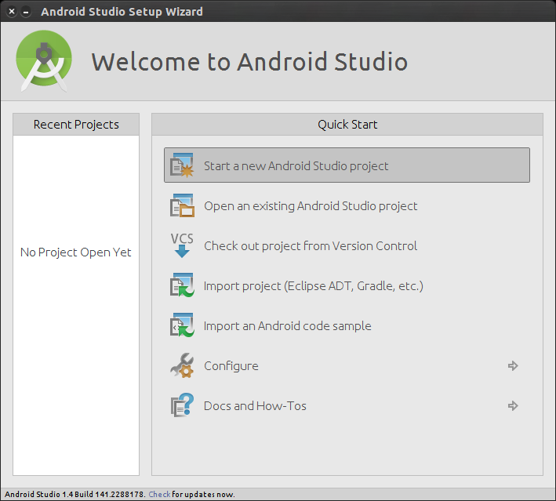
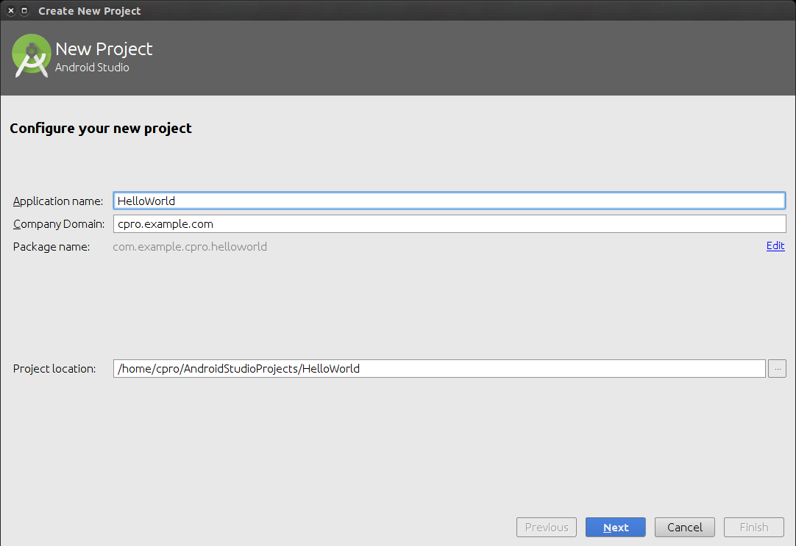
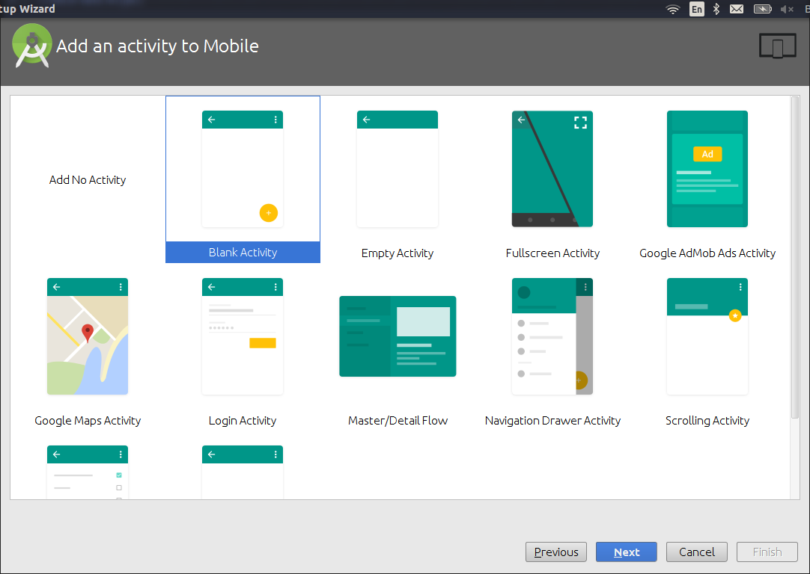
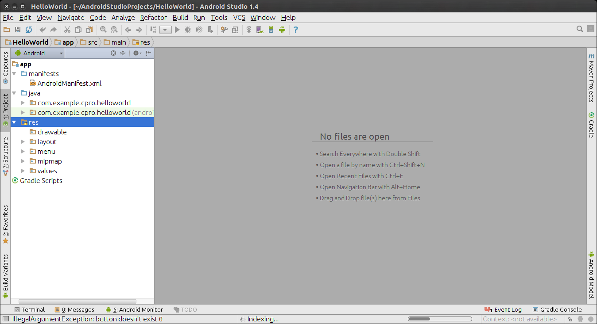
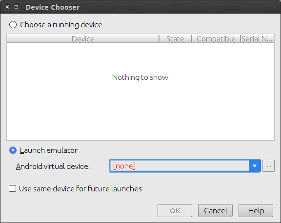
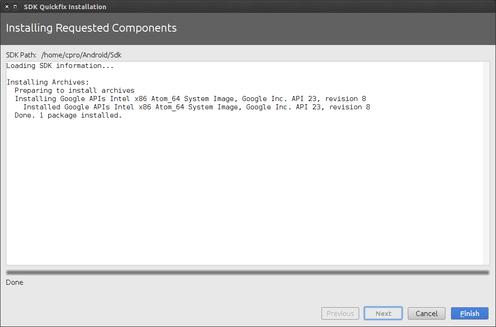

Привет! Этот небольшой мастер-класс подготовлен GDG Vladivostok и +Сергей Мелехин для тех, кто никогда не программировал под Android, но хотел бы начать.
Android studio - рекомендованная Google среда разработки приложений для Android. Android studio можно бесплатно скачать здесь: http://developer.android.com/intl/ru/sdk/index.html По ссылке так же доступна и инструкция по установке на все поддерживаемые ОС. Не буду дублировать её здесь.
При первом запуске Android Studio предложит скачать и установить SDK (набор инструментов для разработки). Смело соглашайтесь и качайте предложенную версию. Next, Next, Next, настройки по-умолчанию, всё как всегда.
Когда установка SDK закончена появляется окно с предложением открыть существующий, или создать новый проект. Мы хотим создать новый! Выбираем Start a new Android Studio project
задаём название проекта (HelloWorld)
Выбираем Blank Activity
и жмём "готово". Проект инициализируется, создаётся базовый скелет.
Нажмите закладку Project слева. Откроется боковая панель со структурой проекта. Папка app содержит исходники проекта, а gradle scripts - скрипты для его сборки. Рассмотрим содержимое app.
Приложение можно уже сейчас запустить на реальном телефоне или эмуляторе Android. Для этого нажмём зелёную кнопку Play сверху на панели инструментов. Теперь Android Studio немного пошуршит своим gradle. Gradle - это система автоматической сборки, последнее поколение в ряду make, cmake, ant, maven и других. Появляется окно выбора устройства для установки скомпилированного приложения. Если ваше Android устройство подключено по USB и на нём включен режим разработчика - оно будет в списке. Ну и всегда можно создать новое "устройство" при помощи встроенного в SDK эмулятора Android. Пока эмулированных устройств нет (красный текст [none] как бы намекает...). Нажмите троеточие рядом с ним.
Жмём Create Virtual Device, выбираем Nexus5, из списка доступных образов выбираем последний x86_amd64.
Когда всё загрузится, выбираем нужное устройство (там где было [none]) и жмём запустить. Через некоторое время эмулированный девайс загрузится и на нём запустится наша программа. Пока в ней только то, что нагенерировала сама AndroidStudio - менюшка и FloatingActionButton со значком письма. Всё это мы вскоре безжалостно удалим.
Activity - это один экран в приложении Android. Приложения стараются проектировать так, чтобы одной Activity соответствовало одно действие. Например в одной Activity пользователь смотрит список рецептов, в другой просматривает рецепт, а в третьей - редактирует его. Сейчас в нашем приложении одна Activity. Давайте создадим ещё. File/New/Activity/Empty Activity Назовём её банально ActivityTwo. Откроется дизайнер форм, на котором отобразится наша пустая ActitvityTwo. Давайте добавим на неё TextView и зададим какой-нибудь умеренно хулиганский текст, например "А у Вас вся спина белая!".
Activity мы создали, но если сейчас скомпилировать и запустить программу заново, мы ActivityTwo не увидим. Нужно её как то открывать. Для этого создадим на первой ActivityOne кнопку "TheButton" и добавим открытие ActivityTwo в обработчик события onClick нашей кнопки. Делать это в визуальном дизайнере интерфейса не круто. Внизу слева есть две закладки - "Design" и "Text". Давайте переключимся в режим "Text". Тут всё менее понятно, но только используя этот режим можно осознано создавать или отлаживать сложные интерфейсы. В менеджере структуры проекта слева в папке res/layout у нас сейчас два файла, относящиеся к ActivityOne: activity_activity_one.xml и content_activity_one.xml. Первый - общее описание Activity, а второй - её наполнение. По-умолчанию Android Studio напихало много лишнего в нашу Activity, давайте уберёмся. Должно получиться следующее:
<?xml version="1.0" encoding="utf-8"?>
<android.support.design.widget.CoordinatorLayout
xmlns:android="http://schemas.android.com/apk/res/android"
xmlns:app="http://schemas.android.com/apk/res-auto"
xmlns:tools="http://schemas.android.com/tools" android:layout_width="match_parent"
android:layout_height="match_parent" android:fitsSystemWindows="true"
tools:context=".ActivityOne">
<include layout="@layout/content_activity_one" />
</android.support.design.widget.CoordinatorLayout>
Вот эта абракадабра - описание Activity в XML формате. XML файлы с описанием форм лежат в папке res/layout вашего проекта. Если по пунктам - внешний tag CoordinatorLayout определяет характер относительного расположения элементов на Activity. Параметры layout_width и layout_height задают размер области. match_parent значит, что область растянется на всю площадь родителя. В нашем случае родитель - ActivityOne. Тег include говорит, что нужно подключить дополнительное xml - описание из content_activity_one.xml.
Откроем content_activity_one.xml в дереве проекта. Нас интересует режим Text. Добавим туда кнопку, и назовём её TheButton.
<?xml version="1.0" encoding="utf-8"?>
<RelativeLayout xmlns:android="http://schemas.android.com/apk/res/android"
xmlns:tools="http://schemas.android.com/tools"
xmlns:app="http://schemas.android.com/apk/res-auto" android:layout_width="match_parent"
android:layout_height="match_parent" android:paddingLeft="@dimen/activity_horizontal_margin"
android:paddingRight="@dimen/activity_horizontal_margin"
android:paddingTop="@dimen/activity_vertical_margin"
android:paddingBottom="@dimen/activity_vertical_margin"
app:layout_behavior="@string/appbar_scrolling_view_behavior"
tools:showIn="@layout/activity_activity_one" tools:context=".ActivityOne">
<TextView android:text="Hello World!" android:layout_width="wrap_content"
android:layout_height="wrap_content" />
<Button
android:layout_width="wrap_content"
android:layout_height="wrap_content"
android:id="@+id/TheButton"
android:layout_centerInParent="true"
android:text="Press me" />
</RelativeLayout>
Теперь надо открыть ActivityTwo. Тут в дело вступает Intent (намерение). Intent - это объект, с помощью которого наше приложение говорит Android, что оно хочет что-то сделать. Например открыть Activity. Давайте создадим Intent для запуска ActivityTwo. Для этого откроем файл ActivityOne.java, и найдём там метод onCreate первой Activity. Уберём всё связанное с Toolbar и FloatingActionButton - мы их удалили из layout. И добавим обработчик нажатия кнопки. Должно получиться так (имя пакета будет отличаться):
package com.example.cpro.helloworld;
import android.content.Intent;
import android.os.Bundle;
import android.support.v7.app.AppCompatActivity;
import android.view.View;
import android.widget.Button;
public class ActivityOne extends AppCompatActivity {
@Override
protected void onCreate(Bundle savedInstanceState) {
super.onCreate(savedInstanceState);
setContentView(R.layout.activity_activity_one);
Button bt = (Button) findViewById(R.id.TheButton);
bt.setOnClickListener(new View.OnClickListener() {
@Override
public void onClick(View view) {
Intent intent = new Intent(ActivityOne.this, ActivityTwo.class);
startActivity(intent);
}
});
}
}
Давайте разберём, что тут происходит: в обработчике события OnCreate ActivityOne мы привязываем к событию onClick кнопки и в этом обработчике создаём Intent для открытия ActivityTwo. Завершается создание Activity вызовом ф-ии startActivity()
Запускаем, проверяем. Теперь наша ActivityTwo запускается по кнопке и показывает умеренно хулиганский текст! В качестве простенького домашнего задания можете добавить на ActivityTwo кнопку для закрытия. Подскажу, что Activity закрывается вызовом ф-ии finish().
Мы конечно же только слегка царапнули тему программирования для Android, поэтому если интересно и есть желание продолжать - рекомендую онлайн курсы от
И однозначно, вам понадобится справочная информация с http://developer.android.com/
Исходники того, что получилось можно посмотреть/скачать тут: https://github.com/C-Pro/AndroidTutorial0
Удачи!